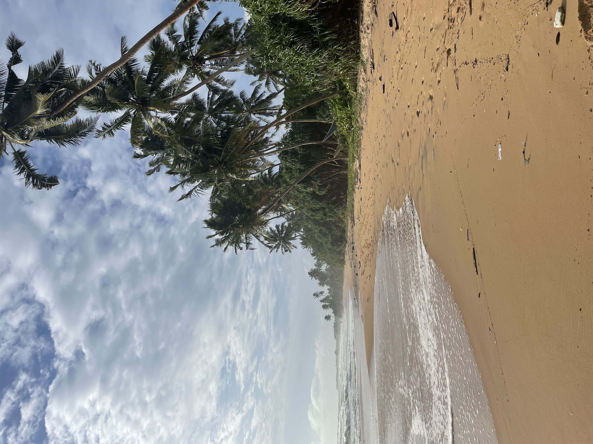
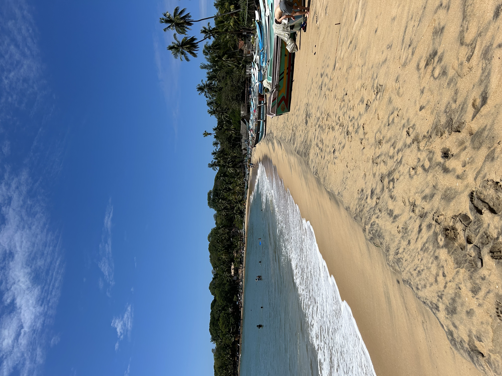
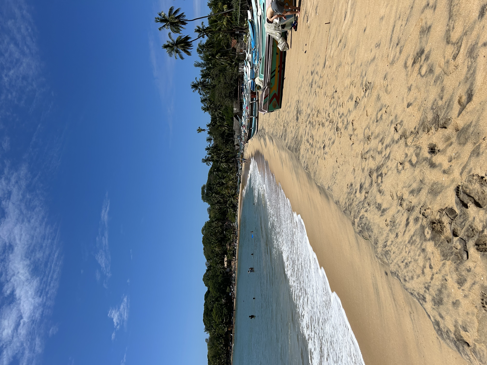
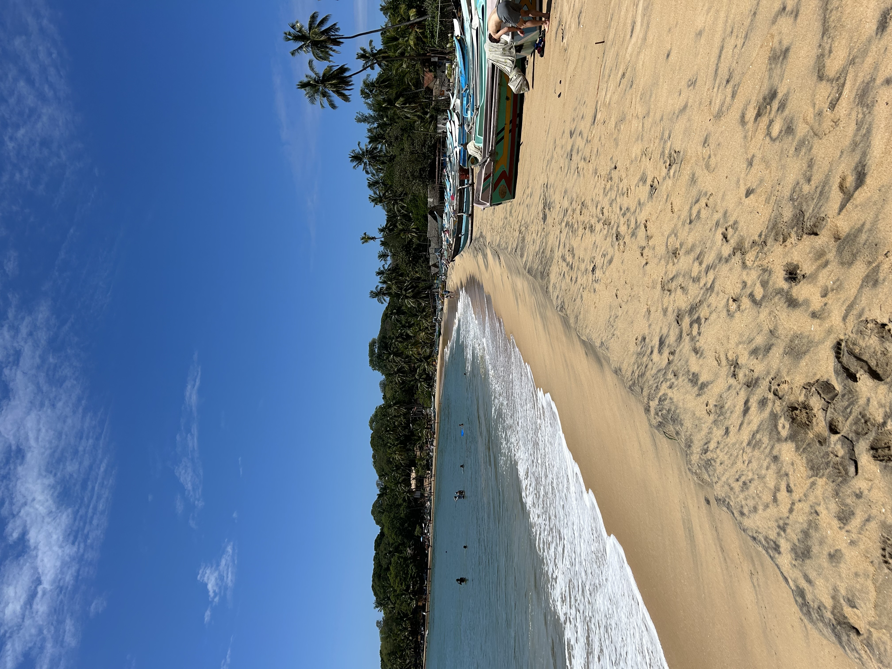

Weetjes over srilanka
- Bussen hebben altijd voorrang in het verkeer
- Roepie is de munteeinheid van Srilanka
- Sri Lanka betekent gezegend land
- Er zijn veel theeplantages in srilanka
- De treinen in Sri Lanka rijden met de deuren open
- Olifanten zijn symbolen van Sri Lanka
- De lokale mensen in Sri Lanka zijn erg vriendelijk
- De Sri Lankanen verplaatsen zich meestal via tuktuk of met de bus
- Je kan in Sri Lanka het water niet uit de kraan drinken
- Sri Lanka wordt ook wel de traan van India genoemd

 

